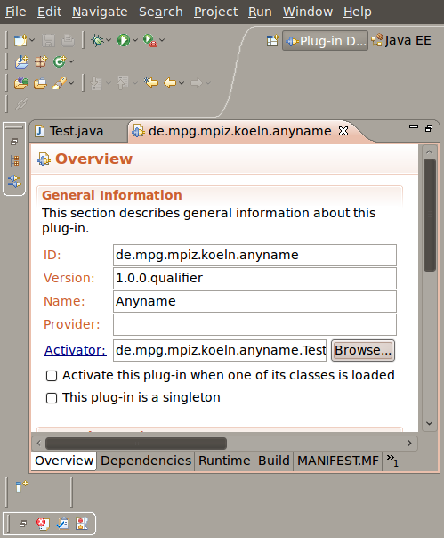

For this example we will create a very simple Step, that will generate a random integer number and then will store this number to the Data Server.
-
Create a new class that extends AbstractAnnaStep<DataBean>.
As you can see you need to implement some call-back-methods which will be called by the execution server:
-
canBeSkipped(DataProxy<DataBean> proxy) tells the server if execution is necessary or if this Step can be skipped because results are already there.
-
DataProxy<DataBean> getDataProxy() is an OSGi-related implementation: This method will return the DataProxy implementation, that acts as the Data Server for this Step.
-
requirementsSatisfied(DataProxy<DataBean> proxy) will tell the server if all preconditions for execution of this Step are fulfilled. If this method returns true, server will execute this Step.
-
run(DataProxy<DataBean> proxy) should implement what the Step actually does when it is executed.
-
isCyclic() tells the server if this Step will execute more than once.
-
-
Implement DataProxy<DataBean>getDataProxy():
This brings some programming overhead since we need to override two more methods to do so. We also need a ServiceTracker reference.
Your class should look like this:
Notice that we have overwritten AbstractAnnaStep.init(BundleContext context) and Object.finalize()
The way to implement DataProxy<DataBean>getDataProxy() is always the same and your implementation should always look like this. The only thing that needs to be adapted is the actual implementation type of DataProxy<DataBean> when retrieving the data server reference.
SimpleDataServer server = (SimpleDataServer) tracker.getService();
This is actually only one line of code that can be different at this point. That is not very elegant object-oriented design and will be simplified in a later version of the framework.
-
Implement run(DataProxy<DataBean> proxy):
We first generate a new random number and then store it to the Data Bean that is provided by the Data Server.
-
Leave canBeSkipped(DataProxy<DataBean> proxy) and isCyclic() as they are (return false).
-
Make requirementsSatisfied(DataProxy<DataBean> proxy) return true.
-
Set the bundle activator: Open the manifest file and set the bundle activator to your newly created class.
 -
Done! Your Step implementation is now ready to run!
One last thing:
To be able to verify the storage of the randomly generated number we change run(DataProxy<DataBean> proxy) method to also read the value and print it to our logger.
So our final class looks like this:
-
Export your Plug-in:
Right-click your project → Export... → Plug-in Development → Deployable Plug-ins and fragments → Next→ Finish.
Your Plug-in has been exported to your home directory (a plugins-folder has been created).
Move the jar-file to anna/07-anna-steps-directory
Start the framework! You will see the random number printed in the terminal.